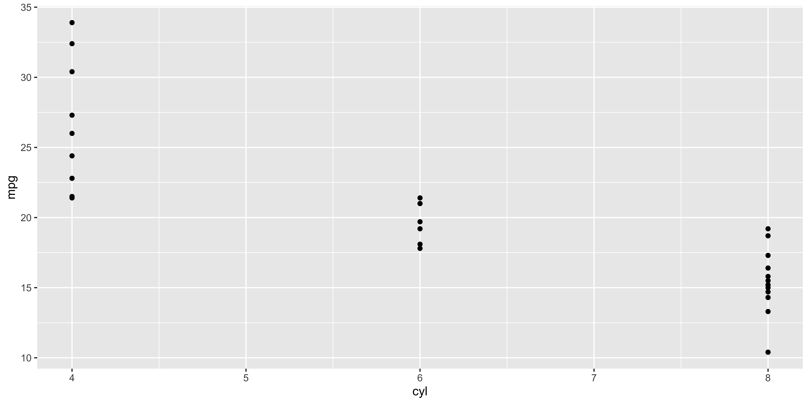

02-2: Using Quarto to Create Presentations
Useful Tools
Transcript
Now we get into the features that make slides feel like slides. The first is the incremental list. Instead of your three bullet points all appearing at once — which invites the audience to read ahead and stop listening to you — you wrap the list in a div marked incremental, and now each bullet appears on its own click. You control the pace, and their attention follows your clicks. The code is on the left. The right side is deliberately empty right now — press the right arrow and watch the points arrive one at a time.
Transcript
The incremental trick is great, but it only works on lists. What if you want to reveal a figure, or a callout box, or a single paragraph, one step at a time? That’s what fragment is for — it’s the general-purpose version. You wrap any element, anything at all, in a div marked fragment, and it stays hidden until you click. Stack several of them and you reveal a slide piece by piece, in whatever order you like. So the rule of thumb is: incremental for lists, fragment for everything else.
.incremental works on lists. To reveal any element one step at a time, wrap it in a .fragment div:
Transcript
A very common layout need is two things side by side: a plot on the left and an explanation on the right, or two plots to compare. Reveal.js gives you a columns layout for this. You open an outer columns block, and inside it you put one column div for each column, each with a width. Look closely at the code, because there’s a subtlety here that trips up almost everyone, and it’s important enough that I gave it its own tab, right next door. The example makes those widths concrete. The first inner column takes forty percent of the available width and uses mtcars to draw a point plot with cylinders on the horizontal axis and miles per gallon on the vertical axis. The second takes the remaining sixty percent and draws a histogram of miles per gallon. The widths add to one hundred percent, so you are explicitly dividing the slide between the two pieces of content. The plus signs add each geometry to its ggplot, and aes tells ggplot which variables belong on the axes. Flip to Output to see those same column containers place the two rendered plots side by side, then move to Why four colons for the nesting rule that keeps the layout intact.
Transcript
Here’s the subtlety. Look at the colons. The outer columns block uses four colons, and the inner column blocks use three. That is not a typo, but here it is a clarity convention rather than a parsing requirement. Equal three-colon fences also parse correctly in this layout. Using more colons on the outer block makes the nesting boundaries easier to read and helps you see which closing line belongs to which block. The exact numbers don’t matter, so five outside and three inside works just as well. When you see four on the outside and three on the inside, read that as a deliberate visual nesting signal.
Notice the outer block uses four colons and the inner blocks use three.
- Using more colons for the outer block is a clarity convention that makes the nesting boundaries easier to read.
- Equal three-colon fences also parse correctly here.
- The exact number does not matter. Five outside and three inside works just as well.

Transcript
Every so often you’ll build a slide that just has too much on it, and content spills off the bottom edge. You have two clean ways to handle it. One: shrink the text on just that slide by adding smaller, in curly braces, after its title. Two: let that one slide scroll by adding scrollable. You can also turn scrolling on for the entire deck from the YAML header, and in fact this presentation does exactly that. But my advice, in the callout, is to prefer the per-slide version. A scrolling slide is easy for an audience to miss content on, so it’s better to fix the two or three slides that actually need it than to make every slide scrollable.
Two ways to deal with a slide whose content does not fit.
1. Shrink the text on that slide
2. Let that slide scroll
Or turn scrolling on for every slide from the YAML header:
Transcript
This is the other half of the speaker-view feature we saw earlier. You attach private notes to any slide by adding a div marked notes. The audience never sees them — go ahead and look, they’re invisible on the slide right now — but when you press s for speaker view, your notes appear on your private screen. This is where you put the reminder to yourself: mention that the y-axis is a count, not a share, that kind of thing. The syntax is right there in the code block below, and if you press s now, you’ll see the hidden note attached to this very slide. The R chunk above the note is ordinary audience-facing content: ggplot starts with mtcars, and geom-histogram maps miles per gallon to the horizontal axis, so the bars count cars within mileage ranges. The notes block that follows belongs to the same slide but sends its text only to speaker view. That separation is useful because the visual and your private reminder stay together in the source without putting the reminder in front of the audience. The Try callout repeats the action: press s, allow the pop-up if needed, and inspect the note in the speaker window.

Add notes to any slide with a .notes block:
Transcript
Three small touches that make a deck look finished, all set from the YAML header. The logo option puts an image in the corner of every slide — this deck uses the Nebraska N, which is why you see it in the bottom-right. The footer option runs a line of text along the bottom of every slide, handy for a course number or your name. And slide-number set to true numbers your slides, which matters more than you’d think in a seminar, because it lets someone say go back to the plot on slide twelve instead of that one from a while ago.
You can add a logo with the logo option under revealjs:.
This presentation uses the code below in its YAML header, which is why the logo appears in the bottom-right corner.
Two companions to logo that are worth knowing:
footer: a line of text along the bottom of every slideslide-number: true: shows the slide number, so your audience can refer to one
Transcript
Here’s a feature I’ve been using on you this entire lecture without pointing it out: tabs. Every one of these slides where you click between Code and Output is a tabset. You make one by wrapping your content in a panel-tabset div, and each header inside becomes a tab. The one rule to get right, in the callout, is that the header level inside the tabset has to be exactly one step below the slide’s own header. So on a double-hash slide, your tab names use triple-hash. Get that level wrong and, instead of tabs, you’ll accidentally create brand-new slides, which is a confusing thing to debug.
You can create tabs using the following code:
Figure
Transcript
When you put a figure on a slide, the two options you’ll reach for most are out-width, which controls how big the figure appears on the slide, and fig-align, which controls whether it sits left, center, or right. Those two get you most of the way. There’s a full reference linked here for everything else, but let’s look at a few concrete examples so you can see the effect for yourself.
You can use
out-widthto control the size of the figure as displayed on the slidefig-alignto control the alignment of the figure
See here for all the options available.
Transcript
Here’s out-width set to 100 percent. The figure fills the full width available on the slide. Flip between the Code tab and the Output tab and just note the relationship: the number in the code, and the size on the slide. The plotting code uses mtcars as the data, maps mpg to the horizontal axis inside aes, and adds geom-histogram, so each bar counts cars in a range of miles-per-gallon values. We will keep that plot unchanged across all three examples. That way, any change you see comes from the display options rather than from a different dataset or geometry. The next tab reduces the width and introduces alignment.
Transcript
Now out-width is 80 percent and I’ve added fig-align center. So the figure is a bit smaller than full width, and it’s centered on the slide. This is probably the most common combination you’ll actually use for a single plot. The ggplot, mtcars data, mpg mapping, and histogram geometry are exactly the same as in Example 1. Eighty percent leaves some unused horizontal space, and center divides that space between the two sides. Keeping the plot code fixed lets you see that out-width changes display size and fig-align changes placement. In the next example, we make both effects more obvious.

Transcript
And here it’s shrunk further, to 50 percent, and pushed to the right with fig-align right. I’m showing you the extremes on purpose so the effect is obvious. But notice something as the plot gets smaller: the axis labels are getting harder to read. Hold that thought, because the next tab is about exactly that problem. The data and plot are still unchanged: ggplot starts from mtcars, aes maps mpg to the horizontal axis, and geom-histogram counts cars within mileage ranges. At fifty percent, the finished image uses half the available width, and right alignment places the unused space to its left. Because only the output options changed, the smaller labels you see are evidence that out-width scales the whole finished image.

Transcript
This is the distinction that causes the most confusion, so let’s be careful. There are two pairs of options that both sound like they control size, but they do different jobs. fig-width and fig-height set the size of the canvas R draws the plot on, in inches, and that decides how big the axis text and points look relative to the plot. out-width and out-height set how big the finished image is displayed on the slide, and that scales the whole picture, text and all. Here’s the practical consequence, and it’s the thing to take away: if your axis labels are too small to read from the back of the room, do not reach for out-width to make the plot bigger, because that scales the tiny text right along with it. Instead, lower fig-width. A smaller canvas makes the text larger relative to the plot, and then the whole thing scales up cleanly. The last two tabs show how to match the drawn and displayed size exactly, and remind you that fig options are always in inches while out options need a unit. Read the matching example as two stages. Fig-width ten and fig-height three ask R to draw a wide, shallow ten-by-three-inch canvas. Out-width ten-in and out-height three-in then request matching display dimensions. The ggplot code uses mtcars and draws the same mpg histogram as the previous examples, so the Output tab isolates the effect of those four size settings. In the callout, notice the syntax difference: fig options use plain numbers because inches are assumed, while out options must say a unit explicitly, such as ten-in, or use a relative size such as eighty percent.
fig-widthandfig-heightset the size of the canvas R draws on, in inches. This decides how large the axis labels and points look relative to the plot.out-widthandout-heightset how large the finished image is displayed on the slide. This scales the whole picture, text and all.
If you want the image displayed at exactly the size it was drawn, give the out- options the same numbers with in attached: